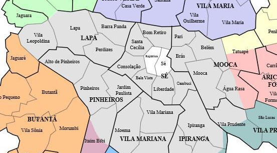
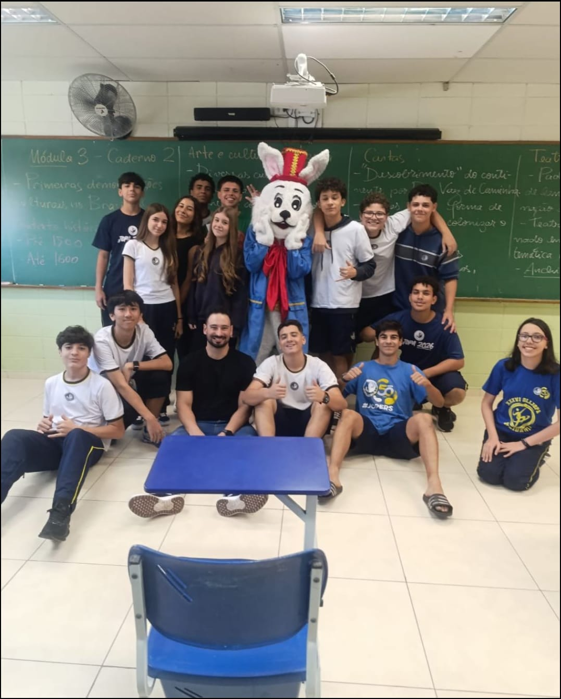
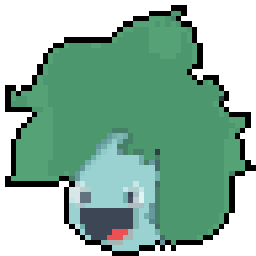

Quatro bairros, um monte de história
A Sé, a Liberdade, a Vila Sônia e a Mooca contam pedaços diferentes da mesma cidade — cada uma com sua fundação, suas histórias, suas curiosidades e seus cantos favoritos. Escolhe um bairro aí embaixo e vem descobrir com a gente.

Escolhe um bairro pra começar
Quem somos
A cidade é um organismo vivo feito de concreto, asfalto e, acima de tudo, de gente. Entre becos, praças e fachadas históricas, residem as memórias que constroem a identidade cultural de São Paulo. A Memória e Cidade nasce do compromisso de resgatar, preservar e valorizar essa herança patrimonial e humana, promovendo uma revitalização urbana inclusiva e sustentável. Nossa atuação não foca apenas na restauração estética de prédios e monumentos, mas na celebração do patrimônio imaterial — as vozes, festas, saberes e memórias dos moradores que dão vida às ruas paulistanas. pesquisa histórica e tecnologia pra contar a história de São Paulo através dos seus bairros.
✏️ texto placeholder — edite este bloco com o nome e o propósito reais da ONGConheça a equipe
[Frase curta de introdução — quem forma a equipe e o que cada um faz no projeto.]

Parceiras da ONG


Participe
Cada bairro tem histórias que não estão em nenhum livro — e talvez estejam guardadas com você. Tem uma foto antiga do seu bairro, uma lembrança de infância, a história que seu avô contava sobre a rua onde morava? Compartilha com a gente. É esse tipo de memória que dá vida a este site e ajuda a preservar um pedaço da história de São Paulo que só quem viveu sabe contar.
Quero compartilhar minha história ✏️ e-mail placeholder — troque pelo contato real da ONG